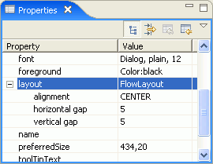

The flow layout manager sizes each component according to its preferred size and arranges them in horizontal wrapping lines. It sizes each component dynamically and positions them so that they are evenly spaced. The advantages of the flow layout manager include its ease of use, and the guarantee that each component can be seen.
To see an example of the flow layout manager in the Visual Editor for Java, drop a JPanel class onto the Design view and then use the palette to select a JButton bean. The default layout manager of a JPanel is java.awt.FlowLayout When you drop this first bean you will see the drop cursor, and a rectangle just inside the container's boundaries as you drag the loaded cursor over it. This target feedback is drawn even on a populated container.

After you drop the button it does not appear beneath the cursor, but where the layout manager has positioned it. Although it may seem that the editor ignored your mouse position when you performed the drop, this is not the case. The Design view reflects the flow layout manager behavior or the specified layout manager behavior. This behavior where the component is not placed directly beneath the mouse is a general feature of all layout managers. Based on where the mouse is, the Visual Editor will attempt to generate code that places the new component close to the desired location. However, the final positioning of the component is determined by the layout manager itself.

There is target feedback when a second component is dropped, because it can be dropped with a position relative to the existing components. If you select another component such as JLabel, you will see a vertical bar either to the left or to the right of the JButton bean, depending on where the cursor is.

When you release mouse button one to complete the drop operation the JLabel bean will be positioned to the left of the JButton bean.Â

By default, the generated code will order the add() expressions to reflect the placement order. You can explicitly set the position of a component using an index as an argument to the add() expression. In addition to specifying the position of a component during a drop operation, you can select a component and change its order relative to the other components in the container using the Design view or the Java Beans view. When you reorder a component, you are actually changing the order in which it is added to its parent container. This can be seen by the calls to the add (Component, Object) method for the JPanel class:
this.add(getJLabel(), null); this.add(getJButton(), null);
Since the Visual Editor for Java has incremental round-tripping from the source to the Design view, you can also reorder the components by editing the order of the methods directly in the Java source view. You can also change the add methods to be add(Component comp , int index )
; setting explicit indexes to each component that are independent of the creation order.
The flow layout manager sizes each component according to its preferred size. As the preferred size changes the Design view will reflect the change. For example, you can change the text of a button and it will automatically become larger to accomodate the new string. This is shown below where the JButton bean's text property was changed to the string OK. After changing the text of the button you will its size increase. The position of it and other components is adjusted to keep them evenly spaced. That is, the layout is reflowed.

Since the preferred size for some components is initially a dimension of 0,0 they might be too small to see in the Design view. So, when a JLabel bean is first dropped on the Design view its text property is initially set to the string JLabel. Likewise, when an AWT Label bean is first dropped, its label property is set to Label.
The flow layout class has its own properties that let you control the spacing of the components, and the flow from the center, the left, or the right side of the container. The value of these properties can be viewed and changed by expanding the layout property in the Properties view.
